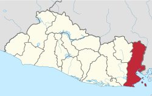

Desde diciembre de 1996, el Parque de la Familia se consagró para disposición del público en la que antes era la Finca Rinaldi. Esta se ubica en el municipio de Panchimalco, a 12 kilómetros de San Salvador, y forma parte de los atractivos de Los Planes de Renderos.
Este sitio goza de una extensión de 48 manzanas de terreno, donde se encuentran coloridos árboles y variada vegetación que sirve de hábitat para animales como conejos, ardillas, venados, aves y reptiles.
En este lugar encontrará un anfiteatro con capacidad de más de 200 personas. También hallará amplias canchas de basquetbol, futbol y voleibol. También podrá hacer uso de diferentes áreas de juego para niños y senderos que lo llevarán a un mirador en dirección al volcán de San Salvador.
Los fines de semana tienen actividades especiales para compartir en familia, entre ellas, la participación de payasos y ventas de comidas típicas a precios cómodos. Las podrá encontrar en los comedores ubicados en el área de cafetería o también frente al mirador.
